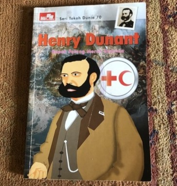
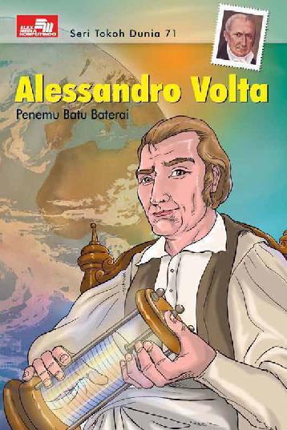
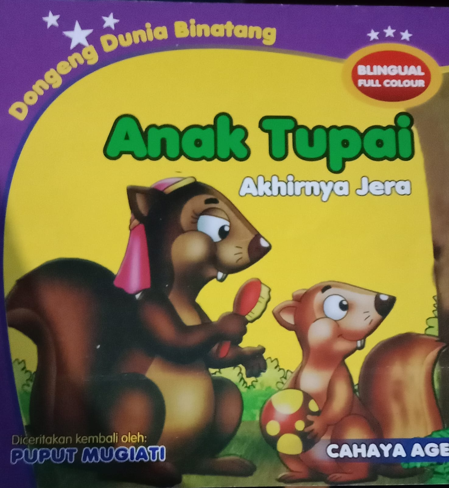
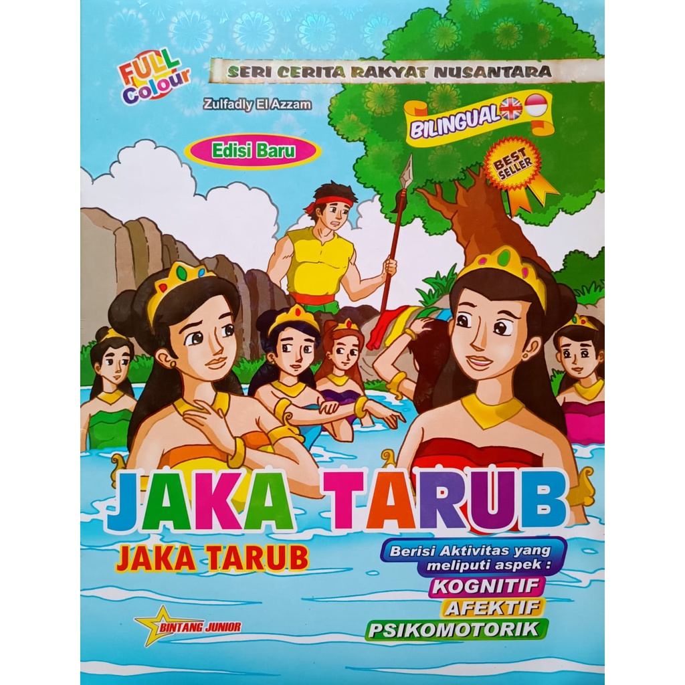
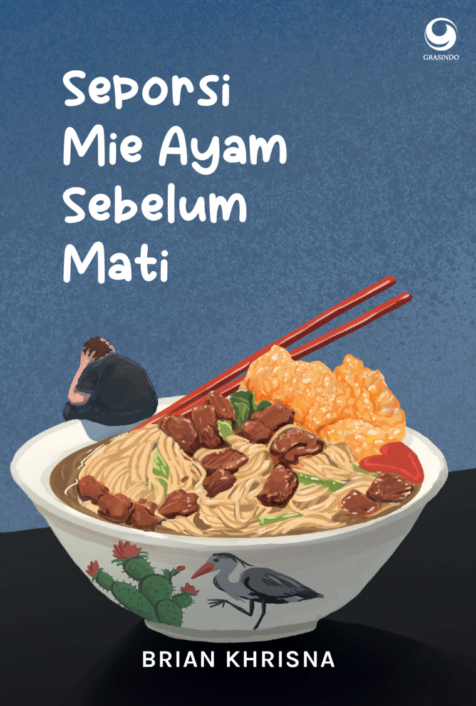

| Gambar | Nama Penulis | Penerbit | Tahun Terbit | Kutipan |
|---|---|---|---|---|
 |
Wong Comic | PT.Elex Media Komputindo | 2011 | "Dalam penderitaan, kita semua saudara" - Siamo Tutti Fratelli!, Henry Dunant. |
 |
Wong Comic | PT.Elex Media Komputindo | 2011 |
"Alessandro Volta (1745-1827), seorang warga otodidak dari Italia
utara, berhasil menemukan baterai voltaik yang mengubah dunia" |
|
 |
Puput Mugiati | Cahaya Agency | 2025 |
"Tupai berjanji untuk mematuhi nasehat ayahnya, dan tidak akan mengulangi perbuatannya lagi" |
 |
Zulfadly El Azzam & Yudhistira Ikranegara |
Bintang Junior | 2022 |
"Jaka Tarub yang menikahi bidadari bernama Nawang Wulan setelah
mencuri selendangnya, namun akhirnya berpisah karena kebohongannya terungkap." |
|
 |
Brian Khrisna | Grasindo(Gramedia Widiasarana Indonesia) | 2025 |
"Hidup ternyata bukanlah perlombaan. Tidak masalah jika langkahmu
melambat dan tak secepat orang yang lain. Sekali-sekali, kita memang perlu menikmati apa yang sedang terjadi dan terus percaya bahwa pada akhirnya semua akan membaik" |